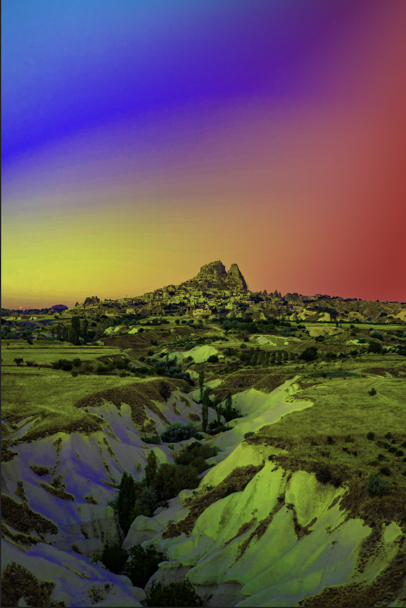

Throughout my first semester in the IDD Program, I have especially enjoyed learning how to use Adobe!

In this project, I used Adobe Photoshop to paste and cut out the different images onto the house.

This assingment was focused on typography and creating a style using a part of your name. I chose my first and last initials and edited a cursive font on Adobe Illustrator.
This assingment used Adobe Photoshop to edit the image however I pleased. I changed the hue of the image and created the colourful lighting in the image.